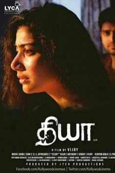

DIYA

Diya is a Tamil Horror film
Hero : Naga Shourya as Krishna
Heroine : Sai pallavi as Thulasi
Ghost role : Veronika Arora as diya
Director : A.L.Vijay
Producer : Allirajah Subaskaran
Writter : A.L.Vijay, Ajayan
Music Composer : Sam
Editor : Anthony
Cinematography : Nirav Shah